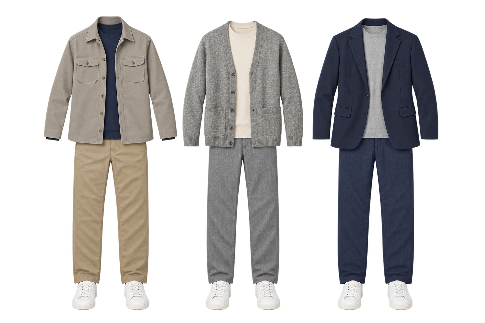
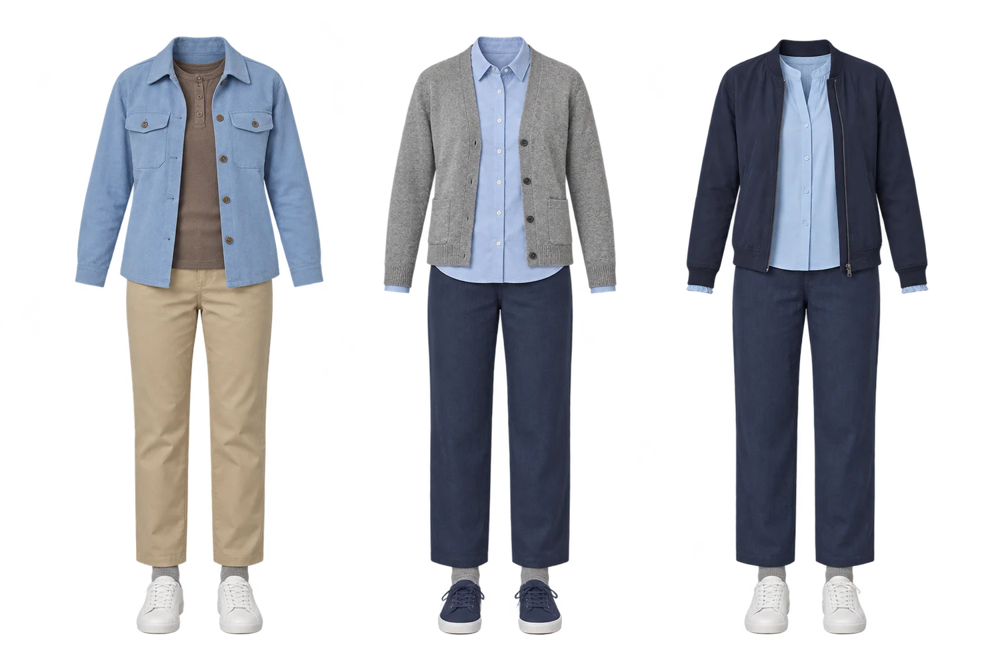

숫자에서 옷차림으로
오늘·내일의 기온 변화와 비 올 가능성을 보고, 겉옷을 벗을 때나 우산을 챙길 때도 알려줘요.
친구들과 함께 만드는 체험판
오늘 날씨에,
내 몸에 맞는 옷차림.
같은 기온에도 누구는 춥고, 누구는 덥잖아요. WearCast는 하루의 날씨와 나의 체감을 바탕으로 입을 옷과 챙길 것을 추천해 줘요.
웹으로 바로 체험하기무료 체험 · 회원가입 없이


실제 앱의 코디 예시 · 추천은 날씨와 설정에 따라 달라져요
오늘·내일의 기온 변화와 비 올 가능성을 보고, 겉옷을 벗을 때나 우산을 챙길 때도 알려줘요.
남성·여성 코디와 캐주얼·오피스·스포티·스트리트. 여러 코디와 색 조합 중 내 취향에 맞는 걸 골라요.
하루가 끝나면 ‘추웠어요·딱 좋았어요·더웠어요’를 알려주세요. 기록이 쌓이면 추천 기준이 조금씩 나에게 맞춰져요.
LET’S TRY IT
아래에서 기기를 골라주세요. 로그인은 필요 없어요.
친구 피드백은 웹 체험판으로 함께해요. 설치 파일 없이 같은 링크에서 새 버전을 확인할 수 있어요.
웹으로 바로 시작하기홈 화면 아이콘으로 앱처럼 열 수 있어요. 웹에서는 예약 알림과 홈 위젯을 제공하지 않아요.
알림과 홈 위젯을 확인하고 싶은 Android 사용자용 테스트 앱이에요.
테스트 APK 다운로드지금은 웹 체험판으로 의견을 모으고 있어요. 향후 앱스토어에 정식 출시하면 스토어를 통해 업데이트받을 수 있어요. 자동 업데이트 여부는 기기 설정에 따라 달라요.
MADE BETTER TOGETHER
추천대로 입었을 때 어땠는지, 코디가 마음에 드는지, 불편한 화면은 없었는지. 이 링크를 보내준 사람에게 편하게 이야기해 주세요. 화면이 이상하면 스크린샷도 좋아요.